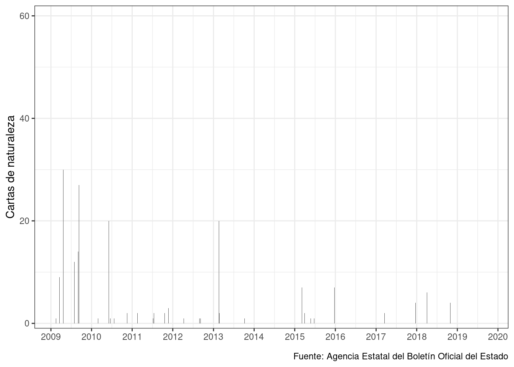
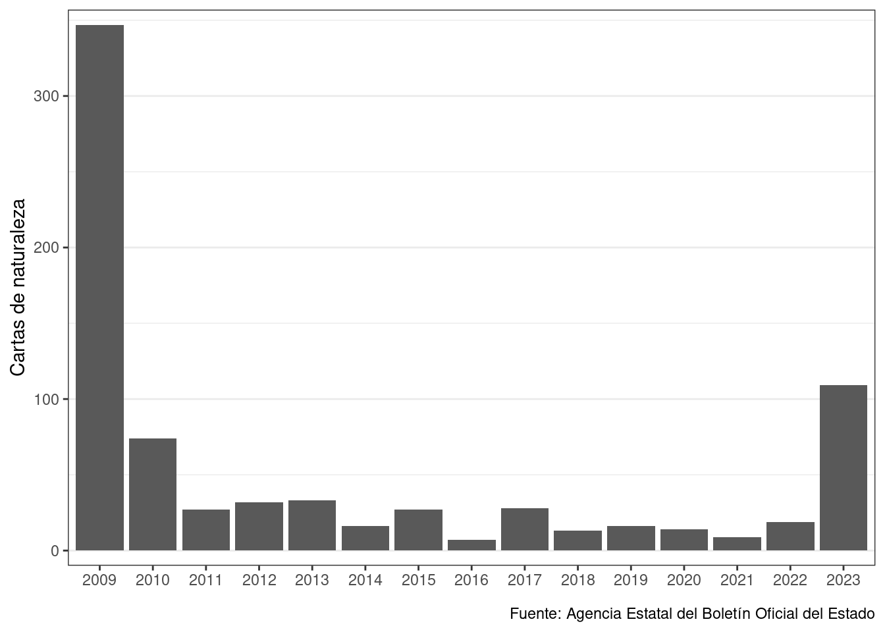

Esta vez repito un poco el análisis de Cívio, pero sólo a partir de 2009 y hasta 2019. Más que nada para confirmar que las cifras cuadren, que efectivamente se da.


| Year | n |
|---|---|
| 2009 | 347 |
| 2010 | 74 |
| 2011 | 27 |
| 2012 | 32 |
| 2013 | 33 |
| 2014 | 16 |
| 2015 | 28 |
| 2016 | 7 |
| 2017 | 28 |
| 2018 | 13 |
| 2019 | 14 |
Para terminar con un poquito más de contenido. Los otros epigrafes sobre la “Nacionalidad española” que no son sobre cartas de naturaleza:
| Fecha | Sección | Texto sección | Departamento | Texto publicación | Publicación | |
|---|---|---|---|---|---|---|
| 1 | 2009-02-16 | 3 |
|
MINISTERIO DE JUSTICIA | Resolución de 19 de enero de 2009, de la Dirección General de los Registros y del Notariado, por la que se publica la relación de concesiones de nacionalidad durante el segundo semestre de 2008. | BOE-A-2009-2605 |
| 2 | 2009-08-06 | 3 |
|
MINISTERIO DE JUSTICIA | Resolución de 16 de julio de 2009, de la Dirección General de los Registros y del Notariado, por la que se publica la relación de concesiones de nacionalidad durante el primer semestre de 2009. | BOE-A-2009-13082 |
| 3 | 2010-02-18 | 3 |
|
MINISTERIO DE JUSTICIA | Resolución de 20 de enero de 2009, de la Dirección General de los Registros y del Notariado, por la que se publica la relación de concesiones de nacionalidad durante el segundo semestre de 2009. | BOE-A-2010-2654 |
| 4 | 2010-03-01 | 3 |
|
MINISTERIO DE JUSTICIA | Corrección de errores de la Resolución de 16 de julio de 2009, de la Dirección General de los Registros y del Notariado, por la que se publica la relación de concesiones de nacionalidad durante el primer semestre de 2009. | BOE-A-2010-3297 |
| 5 | 2010-08-10 | 3 |
|
MINISTERIO DE JUSTICIA | Resolución de 8 de julio de 2010, de la Dirección General de los Registros y del Notariado, por la que se publica la relación de concesiones de nacionalidad durante el primer semestre de 2010. | BOE-A-2010-12920 |
| 6 | 2011-02-23 | 3 |
|
MINISTERIO DE JUSTICIA | Resolución de 3 de febrero de 2011, de la Dirección General de los Registros y del Notariado, por la que se publica la relación de concesiones de nacionalidad durante el segundo semestre de 2010. | BOE-A-2011-3614 |
| 7 | 2011-07-20 | 3 |
|
MINISTERIO DE JUSTICIA | Resolución de 7 de julio de 2011, de la Dirección General de los Registros y del Notariado, por la que se publica la relación de concesiones de nacionalidad durante el primer semestre de 2011. | BOE-A-2011-12539 |
| 8 | 2012-02-08 | 3 |
|
MINISTERIO DE JUSTICIA | Resolución de 25 de enero de 2012, de la Dirección General de los Registros y del Notariado, por la que se publica la relación de concesiones de nacionalidad durante el segundo semestre de 2011. | BOE-A-2012-1861 |
| 9 | 2012-04-09 | 3 |
|
MINISTERIO DE JUSTICIA | Resolución de 21 de marzo de 2012, de la Dirección General de los Registros y del Notariado, por la que se corrigen errores en la de 25 de enero de 2012, por la que se publica la relación de concesiones de nacionalidad durante el segundo semestre de 2011. | BOE-A-2012-4836 |
| 10 | 2012-09-07 | 3 |
|
MINISTERIO DE JUSTICIA | Resolución de 27 de agosto de 2012, de la Dirección General de los Registros y del Notariado, por la que se publica la relación de concesiones de nacionalidad durante el primer semestre de 2012. | BOE-A-2012-11374 |
| 11 | 2012-10-13 | 1 | I. Disposiciones generales | MINISTERIO DE JUSTICIA | Instrucción de 2 de octubre de 2012, de la Dirección General de los Registros y del Notariado, sobre determinados aspectos del plan intensivo de tramitación de los expedientes de adquisición de la nacionalidad española por residencia. | BOE-A-2012-12808 |
| 12 | 2013-07-09 | 1 | I. Disposiciones generales | MINISTERIO DE JUSTICIA | Instrucción de 5 de julio de 2013, de la Dirección General de los Registros y del Notariado, sobre determinados aspectos del plan intensivo de tramitación de los expedientes de adquisición de la nacionalidad española por residencia. | BOE-A-2013-7472 |
| 13 | 2015-05-25 | 1 | I. Disposiciones generales | MINISTERIO DE JUSTICIA | Instrucción de 13 de mayo de 2015, de la Dirección General de los Registros y del Notariado, sobre remisión de las solicitudes de adquisición de la nacionalidad española por residencia. | BOE-A-2015-5696 |
| 14 | 2015-06-25 | 1 | I. Disposiciones generales | JEFATURA DEL ESTADO | Ley 12/2015, de 24 de junio, en materia de concesión de la nacionalidad española a los sefardíes originarios de España. | BOE-A-2015-7045 |
| 15 | 2015-09-30 | 1 | I. Disposiciones generales | MINISTERIO DE JUSTICIA | Instrucción de 29 de septiembre de 2015, de la Dirección General de los Registros y del Notariado, sobre la aplicación de la Ley 12/2015, de 24 de junio, en materia de concesión de la nacionalidad española a los sefardíes originarios de España. | BOE-A-2015-10441 |
| 16 | 2015-11-07 | 1 | I. Disposiciones generales | MINISTERIO DE JUSTICIA | Real Decreto 1004/2015, de 6 de noviembre, por el que se aprueba el Reglamento por el que se regula el procedimiento para la adquisición de la nacionalidad española por residencia. | BOE-A-2015-12047 |
| 17 | 2018-03-27 | 3 |
|
MINISTERIO DE LA PRESIDENCIA Y PARA LAS ADMINISTRACIONES TERRITORIALES | Orden PRA/325/2018, de 15 de marzo, por la se publica el Acuerdo del Consejo de Ministros de 9 de marzo de 2018, por el que se prorroga el plazo de presentación de solicitudes de concesión de la nacionalidad española en virtud de la Ley 12/2015, de 24 de junio, en materia de concesión de la nacionalidad española a los sefardíes originarios de España. | BOE-A-2018-4305 |